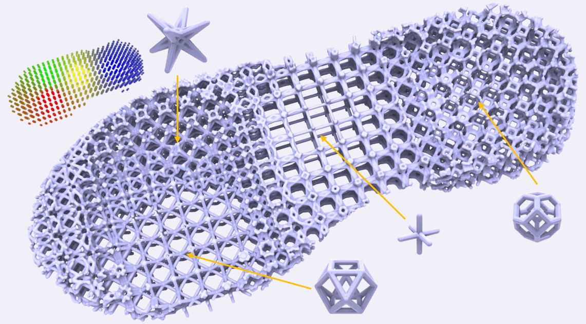
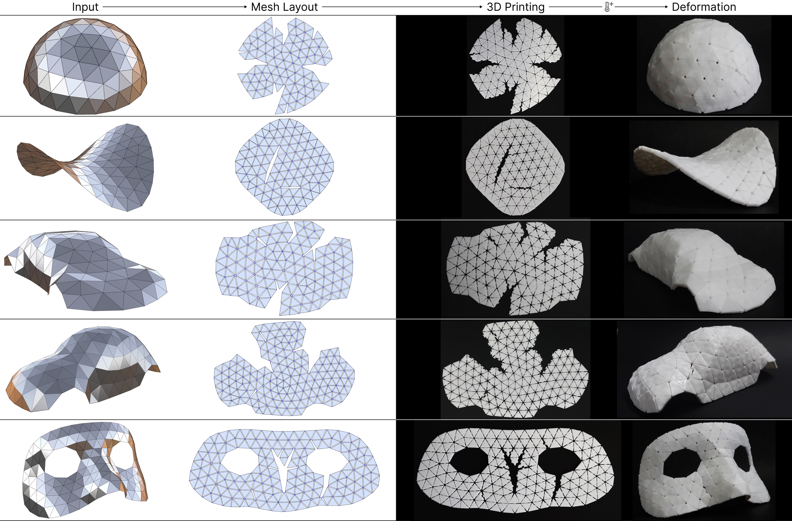
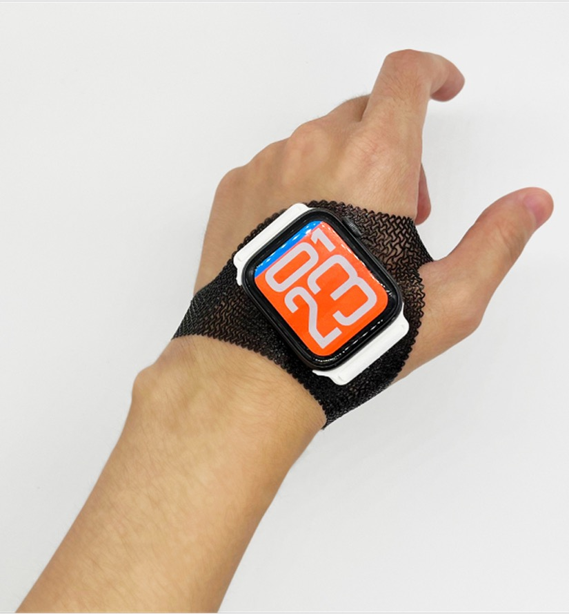

袁潮 | Chao Yuan
计算设计 · 数字制造 · 人机交互
Computational Design · Fabrication · HCI
↓ Scroll Down
学习经历 | Education
2022 - 同济大学 · 博士研究生 | Ph.D. Student, Tongji University
2019 - 2022 清华大学 · 硕士 | Master, Tsinghua University
2015 - 2019 中南大学 · 学士 | Bachelor, Central South University
袁潮，现为同济大学智能科学与技术专业博士研究生，硕士毕业于清华大学美术学院工业设计系，具备艺术与科技的跨学科背景。研究方向涵盖计算设计、人机交互与计算机图形学，近年来重点探索几何结构与材料的设计方法，并致力于智能设计工具的研发以推动设计创新。
Chao Yuan is currently a Ph.D. candidate in Intelligent Science and Technology at Tongji University. He received his Master's degree from the Department of Industrial Design, Academy of Arts and Design, Tsinghua University. With an interdisciplinary background bridging art and technology, his research spans computational design, human–computer interaction, and computer graphics. In recent years, he has focused on design methods for geometric structures and materials, and on developing intelligent design tools to advance design innovation.

AI驱动的混合晶格逆向设计系统
基于4D打印的曲面精准形变工艺
3D打印柔性面料数字制造工具 结构色矩阵装置
结构色矩阵装置
 3D打印结构色张拉膜结构装置
3D打印结构色张拉膜结构装置